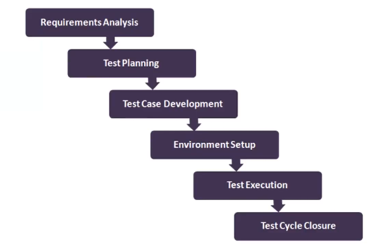

Manual Testing - STLC
- Home
- What is Software?
- What is Software testing?
- Necessity of Software Testing?
- Objectives/Motive of Software Testing
- Software Quality
- Project Vs Product
- Error, Defect/Bug, Failure
- Why the Software has bugs?
- SDLC
- Waterfall Model
- V Model
- Verification Vs Validation
- Testing Methodologies
- Static Testing Vs Dynamic Testing
- Quality Assurance and Quality Control
- Verification/Static Testing Techniques
- Levels of Testing
- System Testing Techniques/Types
- Functional Vs Non Functional Testing
- Smoke Testing Vs Sanity Testing
- Retesting
- Regression Testing
- Retesting Vs Regression Testing
- Exploratory Testing
- Buddy,Pair,Adhoc Testing
- Monky/Gorilla Testing
- Adhoc Vs Monky Vs Exploratory Testing
- Positive and Negative Testing
- Positive and Negative Testcases for Pen
- End to End Testing
- Globalization and Localization Testing
- Test Design Techniques
- STLC
- Requirement Tracebility Matrix(RTM)
- Test Environment
- Test Execution
- Defects/Bugs
- Defects Catergorization
- High and low Severity, Priority defects
- Defect Resolution
- Bug Life Cycle
- QA/Testing Activities
- 7 Principles of Software Testing
- Agile Model
- Scrum
- Scrum Terminology
- Scrum Board
- DoR and DoD
STLC
STLC - Software Testing Life Cycle
- Requirement Analysis
- Test Planning
- Test Design
- Test Execution
- Defect/Bug Reporting & Tracking
- Test Closure

Test Plan Contents
- A Test Plan is a document that describes the test scope, test strategy, objectives, schedule, deliverables and resources required to perform testing for a software product.
- Test Plan Template contents
- Overview
- Scope
- Inclusions
- Test Environments
- Exclusions
- Test strategy
- Defect Reports & Procedure
- Roles/Responsibilities
- Test Schedule
- Test Deliverables
- Pricing
- Entry and Exit Criteria
- Suspension and Resumption criteria
- Tools
- Risks and Mitigations
- Approvals
Use Case, Test Scenario & Test Case
Use Case
- Use case describes the requirement
- Use case contains 3 items
- Actor, which is the user, which can be a single person or a group of people, interacting with a Process.
- Action, which is to reach the final outcome
- Goal/Outcome, which is the successful user outcome
Test Scenario
- A possible area to be tested(What to test)
Test Case
- Step by step actions to be performed to validate functionality of AUT(How to test).
- Test case contains test steps, expected result & actual result.
Use Case Vs Test Case
- Use Case Describes functinal requirement, prepared by Business Analyst(BA)
- Test Case Describes Test Steps/Procedure, prepared by Test Engineer
Test Suite
Test Suite is group of test cases which belongs to same category.

Test Case Contents
- Test Case ID
- Test Case Title
- Description
- Pre-condition
- Priority(P0,P1,P2,P3) - Order
- Requirement ID
- Steps/Actions
- Expected Result
- Actual Result
- Test Data
Test Case Template